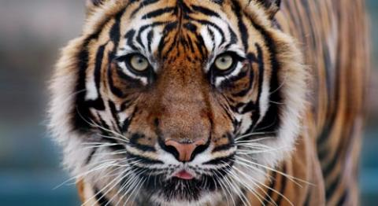
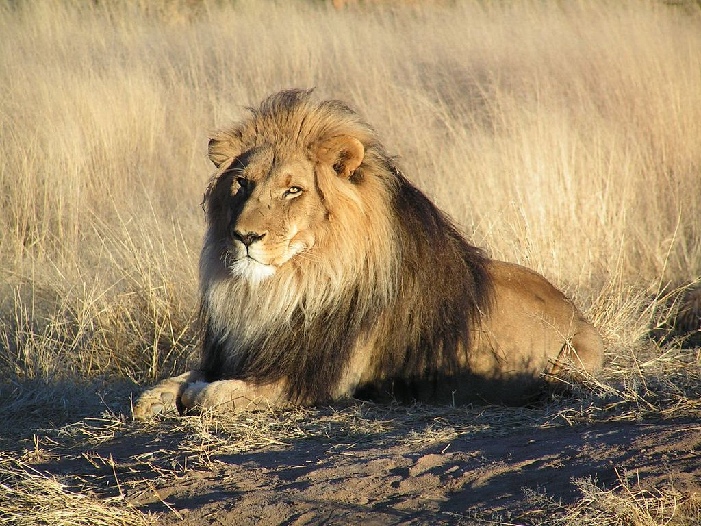
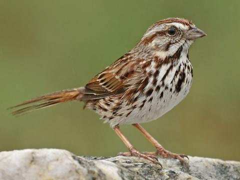

Animals are multicellular eukaryotic organisms that form the biological kingdom Animalia. With few exceptions, animals consume organic material, breathe oxygen, are able to move, reproduce sexually, and grow from a hollow sphere of cells, the blastula, during embryonic development. Over 1.5 million living animal species have been described—of which around 1 million are insects—but it has been estimated there are over 7 million animal species in total. Animals range in length from 8.5 millionths of a metre to 33.6 metres (110 ft) and have complex interactions with each other and their environments, forming intricate food webs. The study of animals is called zoology. Most living animal species are in the Bilateria, a clade whose members have a bilaterally symmetric body plan. The Bilateria include the protostomes—in which many groups of invertebrates are found, such as nematodes, arthropods, and molluscs—and the deuterostomes, containing the echinoderms and chordates (including the vertebrates). Life forms interpreted as early animals were present in the Ediacaran biota of the late Precambrian. Many modern animal phyla became clearly established in the fossil record as marine species during the Cambrian explosion which began around 542 million years ago. 6,331 groups of genes common to all living animals have been identified; these may have arisen from a single common ancestor that lived 650 million years ago.
Birds, also known as Aves, are a group of endothermic vertebrates, characterised by feathers, toothless beaked jaws, the laying of hard-shelled eggs, a high metabolic rate, a four-chambered heart, and a strong yet lightweight skeleton. Birds live worldwide and range in size from the 5 cm (2 in) bee hummingbird to the 2.75 m (9 ft) ostrich. They rank as the world's most numerically-successful class of tetrapods, with approximately ten thousand living species, more than half of these being passerines, sometimes known as perching birds. Birds have wings which are more or less developed depending on the species; the only known groups without wings are the extinct moa and elephant birds. Wings, which evolved from forelimbs, gave birds the ability to fly, although further evolution has led to the loss of flight in flightless birds, including ratites, penguins, and diverse endemic island species of birds. The digestive and respiratory systems of birds are also uniquely adapted for flight. Some bird species of aquatic environments, particularly seabirds and some waterbirds, have further evolved for swimming.Reverse genetic engineering[3] and the fossil record both demonstrate that birds are modern feathered dinosaurs, having evolved from earlier feathered dinosaurs within the theropod group, which are traditionally placed within the saurischian dinosaurs. The closest living relatives of birds are the crocodilians.
| ANIMALS | ||
|---|---|---|
| Name | About | Image |
| TIGER | The tiger (Panthera tigris) is the largest cat species, most recognizable for its pattern of dark vertical stripes on reddish-orange fur with a lighter underside. The species is classified in the genus Panthera with the lion, leopard, jaguar, and snow leopard. It is an apex predator, primarily preying on ungulates such as deer and bovids. |  |
| LION | The lion (Panthera leo) is a species in the family Felidae; it is a muscular, deep-chested cat with a short, rounded head, a reduced neck and round ears, and a hairy tuft at the end of its tail. The lion is sexually dimorphic; males are larger than females with a typical weight range of 150 to 250 kg (330 to 550 lb) for the former and 120 to 182 kg (265 to 400 lb) for the latter. Male lions have a prominent mane, which is the most recognisable feature of the species. A lion pride consists of a few adult males, related females and cubs. |  |
| BIRDS | ||
| SPARROW | Sparrows are a family of small passerine birds. They are also known as true sparrows, or Old World sparrows, names also used for a particular genus of the family, Passer.[1] They are distinct from both the American sparrows, in the family Passerellidae, and from a few other birds sharing their name, such as the Java sparrow of the family Estrildidae. Many species nest on buildings and the house and Eurasian tree sparrows, in particular, inhabit cities in large numbers, so sparrows are among the most familiar of all wild birds. |  |